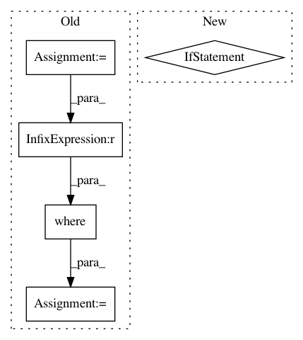

ee05a458afb49cdc775d4a4498a67cbf78d9ead7,mahotas/convolve.py,,find,#,236
Before Change
"""
template = template.astype(f.dtype)
output = _get_output(f, None, "find")
_check_mode(mode, cval, "find")
match = _convolve.template_match(f, template, output, mode2int[mode], 1)
// We now need to adjust the positions
coords = np.where(match == 0)
coords = np.array(coords).T
coords -= np.array(template.shape)//2
return coords.T
After Change
output of ``np.where``, but in an ndarray.
"""
if f.ndim != 2:
raise ValueError("mahotas.find: Cannot handle multi-dimensional images")
template = template.astype(f.dtype)
out = np.empty(f.shape, bool)
match = _convolve.find2d(f, template, out)
return np.array(np.where(match))
In pattern: SUPERPATTERN
Frequency: 3
Non-data size: 5
Instances
Project Name: luispedro/mahotas
Commit Name: ee05a458afb49cdc775d4a4498a67cbf78d9ead7
Time: 2014-03-27
Author: luis@luispedro.org
File Name: mahotas/convolve.py
Class Name:
Method Name: find
Project Name: tensorly/tensorly
Commit Name: 5f078112011a66a93432cb6d38c03935a10f382e
Time: 2020-07-10
Author: git@ameyer.me
File Name: tensorly/decomposition/candecomp_parafac.py
Class Name:
Method Name: non_negative_parafac
Project Name: PIQuIL/QuCumber
Commit Name: a3645eada1fd6b0dc2f262033a93b81a6ca84b55
Time: 2019-12-23
Author: emerali@users.noreply.github.com
File Name: qucumber/utils/unitaries.py
Class Name:
Method Name: _rotate_basis_state